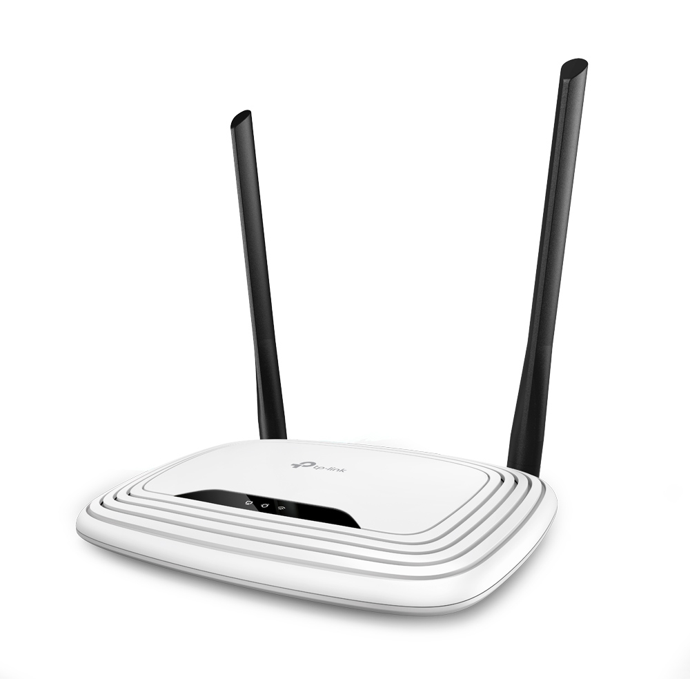

>MyHomeLink ™ Electronic Shop
Беспроводной маршрутизатор TP-LINK TL-WR841N, белый

Описание:
Комбинированное проводное/беспроводное сетевое устройство,
предназначенное для использования в малых и домашних офисах.
Используя технологию 2T2R MIMO, TL-WR841N позволяет создать
еть со сверхвысокой скоростью передачи данных,
благодаря чему возможен онлайн-просмотр видео высокой четкости.
Цена: 3800 рублей
Технические характеристики:
-
Wi-Fi
| Количество диапазонов |
однодиапазонный |
| Диапазон 2.4 ГГц |
есть |
| Стандарт Wi-Fi 802.11b |
есть |
| Стандарт Wi-Fi 802.11g |
есть |
| Стандарт Wi-Fi 802.11n, 2.4 ГГц |
есть |
| Скорость 802.11n, 2.4 ГГц |
300 Мбит/с |
-
Безопасность
| Стандарт WEP |
есть |
| Стандарт WPA |
есть |
| Стандарт WPA2 |
есть |
| Поддержка WPS |
есть |
| Защита от атак Denial-of-service (DoS) |
есть |
| Межсетевой экран (FireWall) |
есть |
-
Протоколы и функции
| Поддержка QoS |
есть |
| Поддержка динамического DNS |
есть |
| Поддержка UPnP |
есть |
| Поддержка VPN |
есть |
| DHCP-сервер |
есть |
-
Порты
| Кол-во портов WAN |
1 |
| Количество выходных портов |
10/100BASE-TX |
-
Антенны
| Количество антенн |
2 |
| Тип антенн |
внешние, несъемные |
| Внешние антенны |
2 |
| Особенности антенн |
5дБи*2 стационарные всенаправленные антенны |
-
Особенности
| Предназначено для установки |
в помещениях |
| Преимущества |
Поддержка IEEE 802.11b/g/n, 2,4 ГГц 300 Мбит/с, 2T2R,
4 порта LAN 10/100 Мбит/с + 1 порт WAN 10/100 Мбит/с,
кнопка Wireless On/Off, кнопка WPS, IPTV, IP QoS,
2×5 дБи внешние антенны, быстрая настройка
|
-
Корпус
| Цвет |
белый |
| Размер (ШхВхГ) |
192 х 33 х 130 мм |
Подробное описание товара:
Роутер TP-LINK TL-WR841N включает технологию 2T2R MIMO и
характеризуется высокой скоростью обработки данных –
до 300 Мб/с, это гарантирует безотказную работу с веб-сайтами,
оперирование документами различных разрешений и, кроме того,
просмотр видео отличного качества. Роутер гарантирует безопасность
поиска информации и работы, так как оснащен системами защиты.
Модель обладает легкой беспроводной конструкцией с двумя несъемными
внешними антеннами для лучшего поиска и передачи сигнала с коэффициентом
усиления до 5 дБи каждая. Белый корпус выполнен из прочного пластика,
роутер отлично вписывается в любой домашний или рабочий интерьер и
гарантирует высокий уровень работы. Маршрутизатор TP-LINK TL-WR841N
– надежный проводник в мир Интернет.
© "Все права защищены"